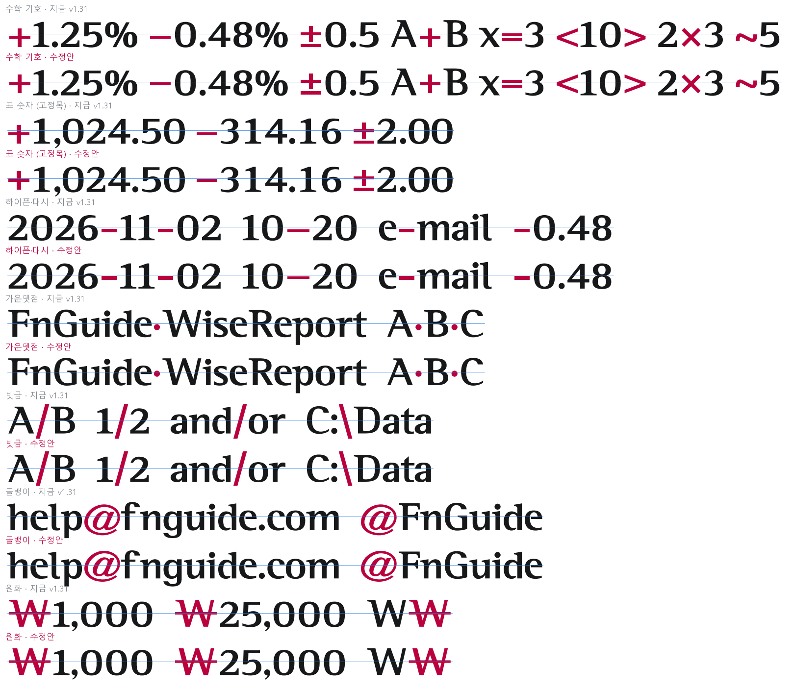
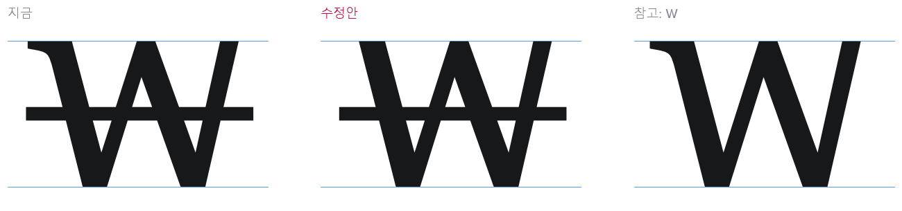
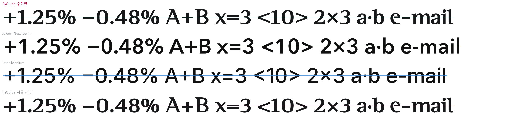
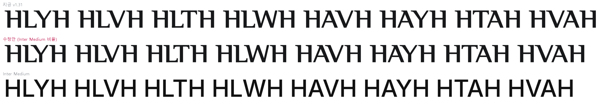
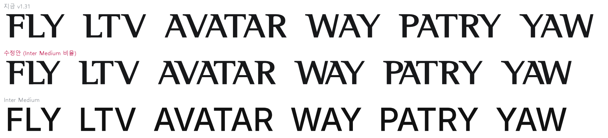
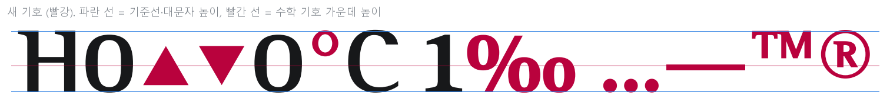
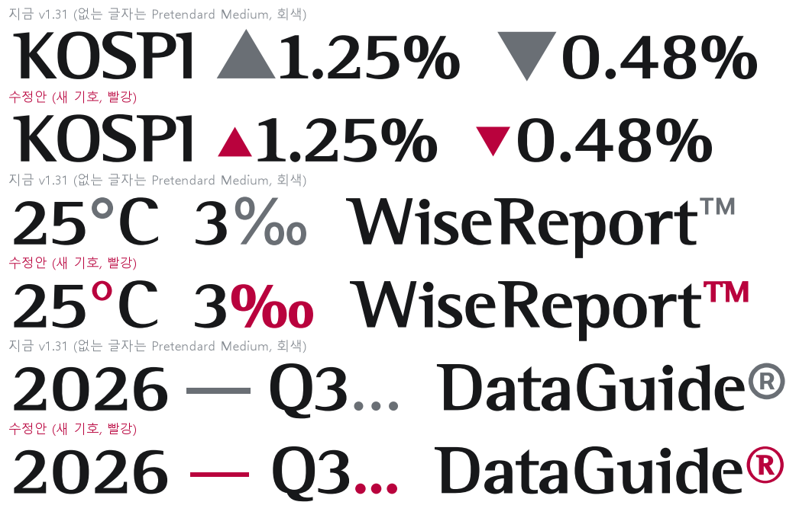

그림으로만 만든 시안입니다. 서체 파일(v1.31)은 고치지 않았습니다. 빨간 글자가 바뀌는 글자이고, 파란 선은 대문자 높이의 절반입니다.
| 무리 | 글자 | 올리는 값 | 정한 방법 |
|---|---|---|---|
| 수학 기호 (B안) | + < > ~ | 55 · 55 · 55 · 56 | + 를 55 올린 가운데 높이 299(대문자의 0.43, Avenir 수준)에 모두 맞춤. 지금은 기호마다 가운데가 조금씩 달라서 올리는 값도 다름 |
| = − × | 46 | ||
| ± | 24 | ||
| 표 숫자용 (고정폭) | + − ± | 55 · 46 · 24 | 위와 같음 |
| 가운뎃점 | · | 46 | 수학 기호와 같은 높이 299 (지금 0.36, 해외 서체 가운데값 0.42) |
| 하이픈 · en 대시 | - – | 26 | 가운데 280(0.40). 해외 서체 0.35~0.43, 가운데값 0.39. 소문자 단어("e-mail")에서 뜨지 않게 수학 기호보다 조금 낮게 둠 |
| 빗금 | / \ | 30 | 지금 0.45 → 0.50 (해외 서체 가운데값 0.50) |
| 골뱅이 | @ | 50 | 지금 0.38 → 0.45 (해외 서체 0.35~0.50) |
| 원화 | ₩ | — | 왼쪽 위 세리프를 지우고, 왼쪽 굵은 획의 바깥선을 같은 기울기로 위까지 곧게 이음 |
그대로 두는 기호: # $ % & 는 해외 서체보다 0.04 낮지만 숫자 높이(대문자의 0.94)에 맞춰져 있어 숫자 옆에서 어울립니다. ( ) [ ] { } | 는 해외 서체보다 오히려 높습니다. 글자 폭과 간격은 바뀌지 않고, 높이만 옮깁니다.
| 항목 | 지금 v1.31 | v1.32 |
|---|---|---|
| 포함 허용 값 (fsType) | 8 — 편집 가능 포함 | 2 — 포함 금지. 파워포인트·워드에서 "파일에 글꼴 포함"으로 저장해도 이 서체는 들어가지 않습니다 |
| 사용 조건 (name 13) | 비어 있음 | 한국어: 에프앤가이드 고유의 한글 글꼴까지 포함된 폰트가 완성되기 전까지 사내에서만 사용합니다. 영어: For FnGuide internal use only until the FnGuide typeface including its own Korean glyphs is completed. |
서체가 없는 PC에서 그 파일을 열면 이 글자들은 다른 서체로 바뀌어 보입니다. 외부로 보내는 자료의 로고는 로고 그림 파일을 쓰세요.


참고: 가로줄이 굵은 획 바깥으로 나온 길이가 왼쪽 175, 오른쪽 143으로 조금 다릅니다. 지금과 같은 값이고, 이번 수정안에서는 건드리지 않았습니다.

Helvetica Neue 비율은 너무 촘촘해서 빼고(사용자 판단), Inter Medium 비율로 다시 맞췄습니다. 대상은 같은 18쌍입니다. 목표 간격 = 전용서체의 HH 간격(56) × (Inter의 그 쌍 간격 ÷ Inter의 HH 간격 149). 간격은 같은 높이에서 잰 가장 가까운 잉크 거리(대문자 700 기준)이고, 최소 30을 지켰습니다. 로고 이름에 쓰인 대문자 쌍은 들어 있지 않아 로고는 바뀌지 않습니다.


| 쌍 | 지금 보정 | 수정안 | 차이 | 잉크 간격 | Inter 비율 | (참고) Helvetica안 |
|---|---|---|---|---|---|---|
| AT | -160 | -210 | -50 | 124 → 74 | 1.3 | -230 |
| AV | -180 | -240 | -60 | 144 → 84 | 1.47 | -260 |
| AW | -145 | -255 | -110 | 175 → 65 | 1.15 | -260 |
| AY | -180 | -240 | -60 | 144 → 84 | 1.49 | -255 |
| FA | -100 | -180 | -80 | 126 → 46 | 0.78 | -175 |
| LT | -180 | -255 | -75 | 154 → 79 | 1.38 | -275 |
| LV | -180 | -285 | -105 | 188 → 82 | 1.42 | -325 |
| LW | -180 | -205 | -25 | 108 → 82 | 1.43 | -240 |
| LY | -180 | -305 | -125 | 220 → 96 | 1.68 | -340 |
| PA | -125 | -200 | -75 | 135 → 60 | 1.02 | -215 |
| RT | -60 | -5 | +55 | 52 → 106 | 1.89 | -80 |
| RV | -105 | -110 | -5 | 94 → 88 | 1.59 | -165 |
| RW | -70 | -115 | -45 | 128 → 84 | 1.48 | -165 |
| RY | -130 | -90 | +40 | 68 → 108 | 1.9 | -165 |
| TA | -145 | -155 | -10 | 85 → 75 | 1.3 | -175 |
| VA | -135 | -140 | -5 | 86 → 81 | 1.44 | -155 |
| WA | -75 | -160 | -85 | 150 → 66 | 1.15 | -160 |
| YA | -145 | -135 | +10 | 74 → 84 | 1.47 | -150 |
15쌍은 붙고 3쌍(RT +55, RY +40, YA +10)은 벌어집니다. Inter는 R 다음 T·Y를 거의 조이지 않기 때문입니다. 가장 많이 붙는 쌍은 LY −125, AW −110, LV −105입니다(Helvetica안은 −160, −115, −145). 잉크 간격은 빈 공간의 넓이를 다 반영하지 못하는 어림 지표입니다.
2차 크리틱 쟁점 D(개선 권장 ❺)를 반영한 시안입니다. 기존 글자 조각(% . – T M R)을 써서 서체 성격을 지켰습니다. 크기·위치는 Pretendard·Inter·Helvetica Neue 등에서 잰 비율을 참고했습니다. 위 1장의 기호 높이 수정안도 함께 적용한 상태입니다. 숫자·대문자·소문자 20자와 앞뒤로 붙여 봐도 닿는 곳이 없습니다.


| 기호 | 만든 방법 | 너비 | 위치 |
|---|---|---|---|
| ▲ ▼ | 꽉 찬 삼각형, 폭 520 · 높이 450 | 640 | 가운데 = 수학 기호 높이(299) |
| ° | 고리 지름 300, 옆 두께 70 · 위아래 45 (전용서체처럼 굵기 차이) | 420 | 위끝 705 (O 넘침 높이) |
| ‰ | % + 오른쪽 아래 고리 하나 더 | 1300 | % 와 같음 |
| … | 마침표 3개, 마침표 너비 간격 | 717 | 기준선 |
| — | en 대시 두께(66)로 한 칸 길이 | 1000 | en 대시와 같은 높이(+26 올린 뒤) |
| ™ | T·M 0.42배 + 획 두께 보정 | 771 | 위끝 700 (대문자 높이) |
| ® | 고리 지름 560(옆 50 · 위아래 38) 안에 R 0.40배 + 획 두께 보정 | 660 | 위끝 710 |
Pretendard의 ▲ ▼ 는 대문자보다 크게(높이 1.06배) 그려져 있어, 숫자 옆에서 증감 표시로 쓰기 좋게 숫자보다 작게(높이 450, 숫자 655) 잡았습니다. 앞뒤 간격 보정(커닝)은 아직 넣지 않았습니다. v1.32를 만들 때 비슷한 글자(+ % 마침표)의 간격을 따릅니다.